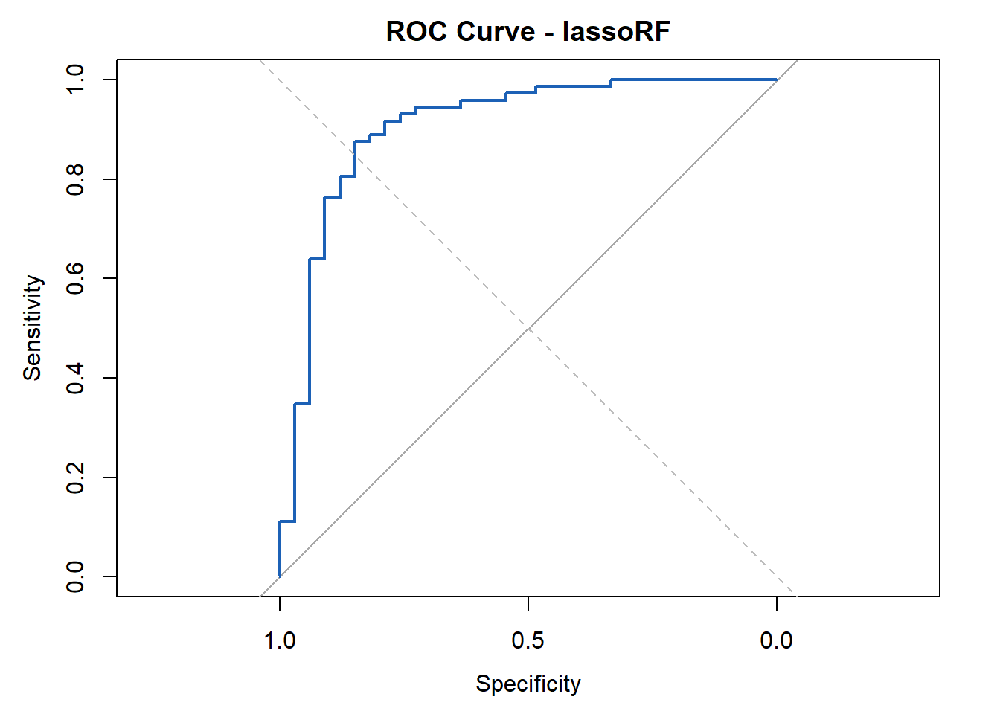

#---------------------1a. Import metadata and protein matrix-------------------## Set file pathsdata_dir <-"C:/Users/User/Documents/UCSF/BREATH2.Prot/data"results_dir <-"C:/Users/User/Documents/UCSF/BREATH2.Prot/results"setwd(data_dir)# Import data from Boxvap_soma_normalized <-read.csv(file.path(data_dir, "vap_soma_normalized.csv"), stringsAsFactors=F)JCI_expanded_metadata <-read.csv(file.path(data_dir, "fixed_metadata_10242025.csv"),stringsAsFactors=F)#-------------------------1b. Log2 Transformation------------------------------## Log2 Transformationprot_cols <-grepl("^seq_", names(vap_soma_normalized))vap_soma_normalized[, prot_cols] <-log2(vap_soma_normalized[, prot_cols])write.csv(vap_soma_normalized, file.path(data_dir, "vap_soma_normalized_transformed.csv"),row.names=F)#---------------------1c. Build data frame with all patients-------------------## Include only the 151 patients in both datasetspatients_vector <-intersect(vap_soma_normalized$patient_id, JCI_expanded_metadata$SubjectID)Prot.Data <- vap_soma_normalized[vap_soma_normalized$patient_id %in% patients_vector, ]Meta.Data <- JCI_expanded_metadata[JCI_expanded_metadata$SubjectID %in% patients_vector, ]# Ensures rows of Meta.Data match those of Prot.DataMeta.Data <- Meta.Data[match(Prot.Data$patient_id, Meta.Data$SubjectID), ]# Produces data frame with patients, age_in_years, sex, and LRTI_Adjudicationpatient_info_ALL <-data.frame(sample_name = Meta.Data$sanitized_name,patient_id = Prot.Data$patient_id,sex = Meta.Data$sex,age_in_years = Meta.Data$age_in_years,LRTI_adjudication = Meta.Data$LRTI_adjudication,stringsAsFactors=F)write.csv(Meta.Data, file.path(data_dir, "meta.data.csv"),row.names=F)write.csv(Prot.Data, file.path(data_dir, "prot.data.csv"),row.names=F)write.csv(patient_info_ALL, file.path(data_dir, "patient_info_ALL.csv"),row.names=F)#------------------1d. Build protein matrix for all patients-------------------## Isolating Protein Matrix (Columns 211:7806 include the 7596 proteins)protein_mat_PROBEID <-as.matrix(Prot.Data[, prot_cols])# Remove "seq_"colnames(protein_mat_PROBEID) <-sub("^seq_", "", colnames(protein_mat_PROBEID))# Replace underscores with hyphenscolnames(protein_mat_PROBEID) <-gsub("_", "-", colnames(protein_mat_PROBEID))# Sets rownames to patient_id rownames(protein_mat_PROBEID) <- Prot.Data$patient_id# Write csvwrite.csv(protein_mat_PROBEID, file.path(data_dir, "protein_mat_PROBEID.csv"), row.names=T)#-------------------------------1e. Safety check-------------------------------#sum(duplicated(Meta.Data$SubjectID)) # Should be 0
[1] 0
length(patients_vector) # Should be 151
[1] 151
all(rownames(protein_mat_PROBEID) == patient_info_ALL$patient_id) # Should be TRUE
[1] TRUE
2. Lookup table for proteins
#------------------------------2a. Prepare Seq ids-----------------------------#library(dplyr)library(SomaScan.db)library(SomaDataIO)library(AnnotationDbi) library(tibble)protein_mat_PROBEID <-read.csv(file.path(data_dir, "protein_mat_PROBEID.csv"), stringsAsFactors=F, check.names=F)# Extracts all PROBEIDs in protein_mat_ALLseq_ids <-colnames(protein_mat_PROBEID)# Remove "seq_" and replace underscore with hyphen to match PROBEID keytype#seq_ids <- sub("^seq_", "", seq_ids)#seq_ids <- gsub("_", "-", seq_ids)#----------------------2b. Build protein lookup table--------------------------## Build tableprotein_lookup_table_ALL <- SomaScan.db::select( SomaScan.db,keys = seq_ids,keytype ="PROBEID",columns =c("PROBEID", "SYMBOL", "GENENAME", "UNIPROT"))#Remove duplicatesprotein_lookup_table_ALL <- protein_lookup_table_ALL %>%distinct(PROBEID, .keep_all=T)#------------------------2c. Filter Unannotated PROBEIDs-----------------------## Removes unannotated PROBEIDsprotein_lookup_table_ALL <- protein_lookup_table_ALL %>%filter(!is.na(SYMBOL)) %>%arrange(SYMBOL)# All valid PROBEIDs in the packagevalid_ids <-keys(SomaScan.db, keytype ="PROBEID")# Find unmapped probesunmapped_probes <-setdiff(seq_ids, valid_ids)# Write csvwrite.csv(data.frame(PROBEID = unmapped_probes), file.path(data_dir, "unmapped_probes.csv"), row.names=F)#---------------------2d. Take mean expression for PROBEIDs--------------------## Keep only annotated probesprotein_mat_PROBEID <- protein_mat_PROBEID[, colnames(protein_mat_PROBEID) %in% protein_lookup_table_ALL$PROBEID]# Reorder lookup table to match the columns in protein_mat_ALLprotein_lookup_table_ALL <- protein_lookup_table_ALL[match(colnames(protein_mat_PROBEID), protein_lookup_table_ALL$PROBEID), ]# Confirm alignmentstopifnot(all(colnames(protein_mat_PROBEID) == protein_lookup_table_ALL$PROBEID))# Collapse duplicate probes (mean expression per SYMBOL)protein_mat_PROBEID_t <-t(protein_mat_PROBEID) %>%as.data.frame() %>%mutate(SYMBOL = protein_lookup_table_ALL$SYMBOL) %>%group_by(SYMBOL) %>%summarise(across(everything(), mean, na.rm=T)) %>%as.data.frame()# Restore to original shaperownames_tmp <- protein_mat_PROBEID_t$SYMBOL#--------------------------2e. Align tables------------------------------------## Define protein_mat_ALLprotein_mat_ALL <-as.data.frame(t(protein_mat_PROBEID_t[, -1]))colnames(protein_mat_ALL) <- rownames_tmprownames(protein_mat_ALL) <- patients_vector# Remove duplicate SYMBOLs in lookup table to match collapsed matrixprotein_lookup_table <- protein_lookup_table_ALL %>%filter(SYMBOL %in%colnames(protein_mat_ALL)) %>%distinct(SYMBOL, .keep_all=T)# Match lookup table order to protein_mat_ALL column orderprotein_lookup_table <- protein_lookup_table[match(colnames(protein_mat_ALL), protein_lookup_table$SYMBOL), ]# Write csvswrite.csv(protein_lookup_table, file.path(data_dir, "protein_lookup_table.csv"),row.names=F)write.csv(protein_mat_ALL, file.path(data_dir, "protein_mat_ALL.csv"), row.names=T)#------------------------------2f. Safety Check--------------------------------#length(unmapped_probes)
[1] 296
nrow(protein_lookup_table) # Should be 6346
[1] 6346
# Check for duplicate symbols any(duplicated(colnames(protein_mat_ALL))) # Should return FALSE
[1] FALSE
# Confirm lengths matchlength(colnames(protein_mat_ALL)) # Should be 6346
[1] 6346
length(protein_lookup_table$SYMBOL) # SHould be 6346
[1] 6346
# How many symbols actually overlapsum(colnames(protein_mat_ALL) %in% protein_lookup_table$SYMBOL) # Should be 6346
[1] 6346
3. Organize Data and Parameters
#-----------------3a. Subset both datasets to Definite/No Evidence-------------## Read csvsprotein_lookup_table <-read.csv( file.path(data_dir, "protein_lookup_table.csv"),stringsAsFactors=F)protein_mat_ALL <-read.csv( file.path(data_dir, "protein_mat_ALL.csv"), stringsAsFactors=F, row.names=1)# Include only Definite and No Evidence patientspatient_info <- patient_info_ALL[patient_info_ALL$LRTI_adjudication %in%c("Definite", "No Evidence"), ]# Includes only the protein matrix for Definite and No Evidence patientsprotein_mat <- protein_mat_ALL[match(patient_info$patient_id, rownames(protein_mat_ALL)), ]# Save outputswrite.csv(patient_info, file.path(data_dir, "patient_info.csv"),row.names=F)write.csv(protein_mat,file.path(data_dir, "protein_mat.csv"),row.names=T)#-------------------------3b. Define Workflow Parameters-----------------------## Define parametersDefinite <-table(patient_info$LRTI_adjudication)["Definite"]No_Evidence <-table(patient_info$LRTI_adjudication)["No Evidence"]npatients <-nrow(patient_info)nproteins <-ncol(protein_mat)nfolds <-5ntrees <-10000# Store parameters as data frameParameters <-data.frame(c(npatients, Definite, No_Evidence, nproteins, nfolds, ntrees))row.names(Parameters) =c("Patients", "Definite", "No Evidence", "Proteins", "Folds", "RF Trees")colnames(Parameters) ="Count"# Write csvwrite.csv(Parameters, file.path(data_dir, "parameters.csv"),row.names=T)print(Parameters)
Count
Patients 105
Definite 72
No Evidence 33
Proteins 6346
Folds 5
RF Trees 10000
#-----------------------------3c. Safety Check---------------------------------## Ensures that protein_mat rownames match patient_id column in patient_infoall(rownames(protein_mat) == patient_info$patient_id) # Should return TRUE
[1] TRUE
any(is.na(match(patient_info$patient_id, rownames(protein_mat_ALL)))) # Should return FALSE
[1] FALSE
# Ensures that protein_mat rownames match patient_id column in patient_infoall(rownames(protein_mat) == patient_info$patient_id) # Should return TRUE
[1] TRUE
4. Fold Assignments
#------------------------4a. Import patient info-------------------------------#library(dplyr)library(rsample)# Read csvspatient_info <-read.csv(file.path(data_dir, "patient_info.csv"), stringsAsFactors=F)Parameters <-read.csv(file.path(data_dir, "parameters.csv"),stringsAsFactors=F, row.names=1)# Define number of foldsnfolds <-as.numeric(Parameters["Folds", "Count"])# Define number of No Evidence patientsNo_Evidence <-as.numeric(Parameters["No Evidence", "Count"])# Minimum required per foldmin_NE_per_fold <-floor(No_Evidence / nfolds)#------------------------4b. Fold Assignment Using rsample --------------------## Retry until constraints satisfiedfolds_ok <-FALSE# Set seed to 8634782 = "BREATH2" .. kinda?set.seed(8634782)# While loopwhile (!folds_ok) {# Stratified vfold_cv using rsample vfold_obj <-vfold_cv(data = patient_info,v = nfolds,strata ="LRTI_adjudication" )# Create a data frame that maps each row to a fold patient_info_with_folds <- patient_info %>%mutate(fold =NA_integer_)# Fill in fold assignmentsfor (i inseq_len(nfolds)) { fold_indices <- vfold_obj$splits[[i]]$in_id# everything *not* in fold_indices is validation fold val_indices <-setdiff(seq_len(nrow(patient_info)), fold_indices) patient_info_with_folds$fold[val_indices] <- i }# Check constraint: minimum No Evidence per fold counts <-table( patient_info_with_folds$fold, patient_info_with_folds$LRTI_adjudication )if (all(counts[, "No Evidence"] >= min_NE_per_fold)) { folds_ok <-TRUE }}# Savewrite.csv( patient_info_with_folds,file.path(data_dir, "patient_info_with_folds.csv"),row.names=F)#--------------------------------4c. Safety Check------------------------------#print(counts)
all(lasso_fold_coefs$protein %in% protein_lookup_table$SYMBOL) # Should return TRUE
[1] TRUE
6. Implement RF
#----------------------------6a. Ready Data for RF Workflow--------------------#library(dplyr)library(magrittr)library(randomForest)library(tibble)set.seed(8634782)# Import datapatient_info_with_folds <-read.csv(file.path(data_dir, "patient_info_with_folds.csv"),stringsAsFactors=F)protein_mat <-read.csv(file.path(data_dir, "protein_mat.csv"), stringsAsFactors=F, row.names=1, check.names=F)Parameters <-read.csv(file.path(data_dir, "parameters.csv"),stringsAsFactors=F, row.names=1)# Define ntrees ntrees <-as.numeric(Parameters["RF Trees", "Count"])# Convert patient_id to characterpatient_info_with_folds$patient_id <-as.character(patient_info_with_folds$patient_id)# Import selected proteinslasso_fold_coefs <-read.csv(file.path(results_dir, "lasso_fold_coefs.csv"), stringsAsFactors=F)lasso_fold_coefs_top1_per_fold <-read.csv(file.path(results_dir, "lasso_fold_coefs_top1_per_fold.csv"),stringsAsFactors=F)lasso_fold_coefs_top3_per_fold <-read.csv(file.path(results_dir, "lasso_fold_coefs_top3_per_fold.csv"),stringsAsFactors=F)#-------------------------6b. Choose proteins to run---------------------------## Choose which LASSO feature set to use for RF (uncomment ONE line)# Option 1: All nonzero proteins across foldsselected_lasso_coefs <- lasso_fold_coefs# Option 2: Top 3 proteins across all folds (ALso uncomment the line with ➡️ below)#selected_lasso_coefs <- lasso_fold_coefs_top3# Option 3: Top 1 protein per fold#selected_lasso_coefs <- lasso_fold_coefs_top1_per_fold# Option 4: Top 3 proteins per fold#selected_lasso_coefs <- lasso_fold_coefs_top3_per_fold#-------------------------6c. RF Workflow--------------------------------------## Outcome variabley <-as.factor(patient_info_with_folds$LRTI_adjudication) # Function to run Random Forest for one outer CV foldlassoRF_cv_outer_fold <-function(test_fold) {# Extract proteins selected by LASSO for this fold keep <- selected_lasso_coefs %>%filter(fold == test_fold) %>% .$protein#keep <- lasso_fold_coefs_top3$protein #➡️(uncomment to run global top3)# Subset protein matrix to selected proteins; rows = samples, columns = selected proteins X <- protein_mat[, keep, drop =FALSE] # Boolean for training samples train <- patient_info_with_folds$fold != test_fold# Fit Random Forest (10000 Trees) rf <-randomForest(X[train, , drop =FALSE], y[train], ntree = ntrees)# Predictions on test fold preds <-predict(rf, newdata = X[!train, , drop =FALSE], type ="prob")[, "Definite"]list(test_fold = test_fold, mod = rf, pred = preds)}# Run RF across all foldscv_list <-lapply(1:max(patient_info_with_folds$fold), lassoRF_cv_outer_fold)# Ensure correct formatpatient_info_with_folds <-as.data.frame(patient_info_with_folds)#--------------------------6d. Collect preds-----------------------------------## Collect out-of-fold predictions for all samplesrf_preds <- cv_list %>%lapply(function(x) {data.frame(patient_id =rownames(protein_mat)[patient_info_with_folds$fold == x$test_fold],pred = x$pred ) }) %>%bind_rows() %>% dplyr::left_join(dplyr::select(patient_info_with_folds, patient_id, LRTI_adjudication), by ="patient_id") %>% dplyr::relocate(LRTI_adjudication, .after = patient_id)# Save RF predictionswrite.csv(rf_preds, file.path(results_dir, "lassoRF_preds.csv"),row.names=F)#------------------------6e. Collect votes-------------------------------------## Collect RF votes (training set OOB probabilities)rf_votes <- cv_list %>%lapply(function(x) {as.data.frame(x$mod$votes) %>% tibble::rownames_to_column("patient_id") %>%mutate(test_fold = x$test_fold) %>%rename(pred = Definite) %>% dplyr::select(test_fold, patient_id, pred) }) %>%bind_rows() %>% dplyr::left_join(dplyr::select(patient_info_with_folds, patient_id, LRTI_adjudication), by ="patient_id") %>% dplyr::relocate(LRTI_adjudication, .after = patient_id)# Save voteswrite.csv(rf_votes, file.path(results_dir, "lassoRF_votes.csv"),row.names=F)
7. Generate ROC Graph
#----------------------------7a. Import metadata & preds-----------------------#library(dplyr)library(magrittr)library(pROC)# Import fold assignmentspatient_info_with_folds <-read.csv(file.path(data_dir, "patient_info_with_folds.csv"),stringsAsFactors=F)# Import out-of-fold predictionslassoRF_preds <-read.csv(file.path(results_dir, "lassoRF_preds.csv"),stringsAsFactors=F)# Ensure consistent factor levelslassoRF_preds$LRTI_adjudication <-factor( lassoRF_preds$LRTI_adjudication,levels =c("No Evidence", "Definite"))# Merge once so we reuse this everywheremerged_preds <- lassoRF_preds %>% dplyr::inner_join( patient_info_with_folds %>% dplyr::select(patient_id, fold),by ="patient_id" )#------------------------7b. Per-fold AUC + ROC plotting-----------------------#output_auc_roc <-function(preds_df, output_suffix) {# Compute per-fold AUC auc_df <- preds_df %>%group_by(fold) %>%summarize({ roc_obj <- pROC::roc(response =factor(LRTI_adjudication, levels =c("No Evidence", "Definite")),predictor = pred,direction ="<" ) ci_vals <- pROC::ci.auc(roc_obj, conf.level =0.95)tibble(auc =as.numeric(roc_obj$auc),auc_lower = ci_vals[1],auc_upper = ci_vals[3] )}, .groups ="drop")# Determine number of folds max_fold <-max(auc_df$fold)# Create ROC PDF (all folds overlayed)pdf(file.path(results_dir, paste0("ROC_", output_suffix, ".pdf")))for (i in1:max_fold) { fold_data <- preds_df %>%filter(fold == i) roc_obj <- pROC::roc(response =factor(fold_data$LRTI_adjudication, levels =c("No Evidence", "Definite")),predictor = fold_data$pred,direction ="<" )plot(roc_obj, add = (i !=1), col = i) }dev.off()# Save per-fold AUC CSV at the very end (safer if plotting errors occur)write.csv( auc_df,file.path(results_dir, paste0("cv_auc_", output_suffix, ".csv")),row.names=F)return(auc_df)}#------------------------------7c. Plot Graph (in QMD)-------------------------## Run AUC computation and PDF creationauc_lassoRF <-output_auc_roc(merged_preds, "lassoRF")max_fold <-max(auc_lassoRF$fold)# Open empty plot for overlay with top-left orientationplot(0, 0, type ="n",xlim =c(1, 0), ylim =c(0, 1),xlab ="Specificity", ylab ="Sensitivity",main ="ROC Curves by Fold")# Add diagonal referencelines(x =c(1, 0), y =c(0, 1), lty =2, col ="gray")for (i in1:max_fold) { fold_data <- merged_preds %>%filter(fold == i) roc_obj <- pROC::roc(response =factor(fold_data$LRTI_adjudication, levels =c("No Evidence", "Definite")),predictor = fold_data$pred,direction ="<" )# Plot specificity directly: axis direction flips via xlimlines(roc_obj$specificities, roc_obj$sensitivities, col = i, lwd =2)}legend("bottomright", legend =paste("Fold", 1:max_fold), col =1:max_fold, lwd =2)

#------------------------------7d. Summaries----------------------------------## Mean AUC / 95% CI for Mean AUCmean_auc <-mean(auc_lassoRF$auc)sd_auc <-sd(auc_lassoRF$auc)n_folds <-nrow(auc_lassoRF)se_auc <- sd_auc /sqrt(n_folds)lower_ci <- mean_auc -qt(0.975, df = n_folds -1) * se_aucupper_ci <- mean_auc +qt(0.975, df = n_folds -1) * se_aucmessage("Lower AUC across folds: ", round(lower_ci, 3))message("Mean AUC across folds: ", round(mean_auc, 3))message("Upper AUC across folds: ", round(upper_ci, 3))print(auc_lassoRF)